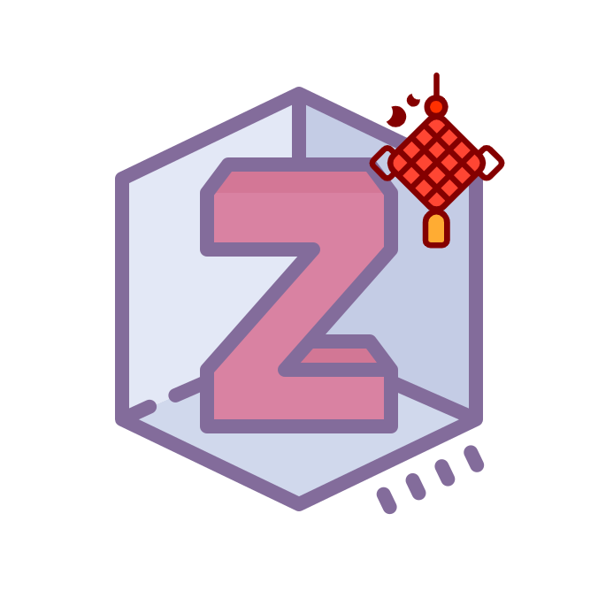
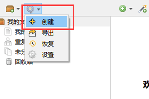
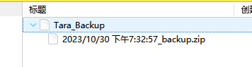
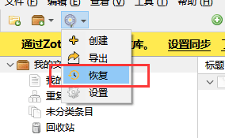
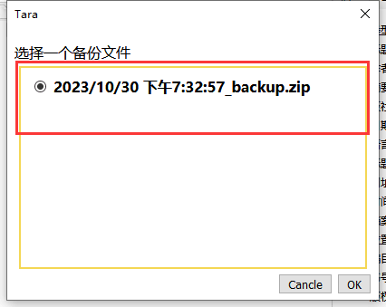
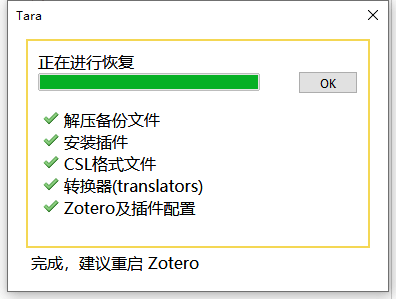
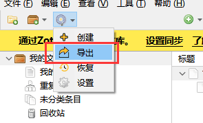
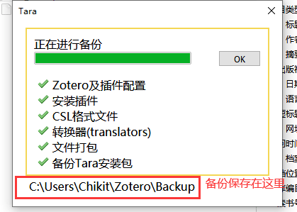
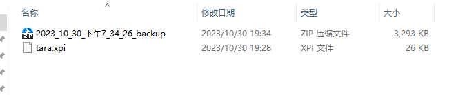

蒲公英 Tara
Tara 是一个用于备份和恢复 Zotero 配置的插件
✅ 备份已安装插件
✅ 备份 CSL 文件
✅ 备份转换器 (translators)
✅ 备份 Locate 文件夹
✅ 备份 Zotero 配置及插件配置
下载地址：
1 创建备份
下载安装 Tara 插件后，通过点击 Tara 图标来创建一个备份

创建成功后，会在 Zotero 中生成一个 Tara_backup 的条目并自动生成一个 ZIP 格式的附件，这个就是备份文件。
如果你再点一次创建，会再生成个附件，你可以选择不同时间段的备份文件进行恢复。

2 恢复备份
点击 恢复

可以根据时间来选择要恢复的备份

等待备份恢复完成，再重启 Zotero

3 导出备份文件
点击 导出

等待完成后，去备份目录查看文件是否生成

导出时，会将当成的配置信息和插件导出到一个单独 ZIP 文件中，导出的备份会默认储存在 数据储存文件夹\backup 下。

4 在新电脑上进行数据恢复
在新电脑上安装了 Zotero，此时 Zotero 上没有任何插件，配置都是默认的。这时，你可以将 导出备份文件 导出的文件复制到新电脑上。
在新电脑 Zotero 上，先安装 Tara.xpi 插件。
插件安装成功，点击恢复，会出现一个文件选择的窗中，选择 导出备份文件 中所生成的备份文件，之后 Zotero 会恢复对应的插件及相关配置。
5 在不同电脑上同步备份
当你在多个电脑上同时使用 Zotero 时，可以通过 Zotero 的 同步功能 来实现数据的快速备份和恢复。
首先在不同电脑上分别配置同步，然后可以在 A 电脑上创建一个备份，备份文件是随条目一起同步的。那 B 电脑 Zotero 应该会自动同步了创建的备份条目 Tara_backup 及对应的附件。
当你在 B 电脑的 Zotero 上点击恢复，选择 A 电脑上刚创建的备份。这样两台电脑上的 Zotero 配置和插件信息就一起同步了。
注意修改 Tara 的「备份 Locate」设置
由于不同系统平台或主机上的文件路径可能不一致，tara 在备份时默认过滤掉了 locate 文件夹，可以通过点击 Tara 图标-设置 进行修改。